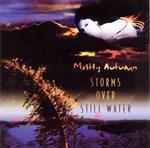

| Artist: | Mostly Autumn |
| Title: | Storms Over Still Water |
| Label: | Autumn Records Ltd AUT1770 |
| Length(s): | minutes |
| Year(s) of release: | 2005 |
| Month of review: | [04/2006] |
| 1) | Out Of The Green Sky | 3.40 |
| 2) | Broken Glass | 3.44 |
| 3) | Ghost In Dreamland | 3.12 |
| 4) | Heart Life | 5.50 |
| 5) | The End Of The World | 4.04 |
| 6) | Black Rain | 3.53 |
| 7) | Coming To... | 2.52 |
| 8) | Candle To The Sky | 8.19 |
| 9) | Carpe Diem | 8.05 |
| 10) | Storms Over Still Water | 7.39 |
| 11) | Tomorrow | 3.40 |
Ghost In Dreamland starts, surprisingly, with a keyboard solo, of a kind. Together with the drums they set a high pace and build a nice tension, especially when the piano comes in. Up to now, the band has played energetically, and that works well for me. Findlay is the main vocalist here, although there are some female backing vocals here. Although the tempo is generally high, the verses are scarely instrumented and quite a few notches lower. The vocal melodies are again very good. The song is also quite symphonic with a Mark Kelly style keyboard solo, dancing piano and Josh's guitar work.
On Heart Life, we open with acoustic guitar and flute. Have we come to the Andes? Later the song powers up, with Findlay wailing along, and the music brimming with organ. The End Of The World is a plodding track, that reminds me most of Pink Floyd, or to be more exact: Roger Waters. There are even some tragic vocals that remind strongly of an anguished Waters. The organ work is again strong, and the song as a whole comes out shiningly. The music has hints of circus music.
Black Rain opens like a straightforward rocker. I wonder whether the black rain indeed refers to the black rain that fell at Hiroshima, short after the bomb fell. The guitar really rocks here. Coming To... is even shorter than usual, and it is also quite distinctive. Here the band experiments somewhat with effects, percussive ones. And when they finally start to rock, the guitars are a bit louder than usual. An excellent instrumental, and a nice change from the foregoing.
Candle To The Sky is first lengthy track, passing the eight minute mark. Josh sings so low, he can hardly be understood here, on this track that is strongly in the Floydian vein, similar to, say, The Night Sky. Floyd fans ought to eat this up. Although...they do tend to be a very conservative lot. The band alternates with all-out organ drenched passages and the subdued vocal parts of Josh. There are even some uplifting vocal choirs here, which is certainly not typical of Floyd. Neither is the flute that comes in later. The epic structure of songs like Mother Nature, this song does not have, but it captivates nonetheless.
Carpe Diem opens with the pipes of Troy Donockley, of Iona. This song harkens back more the epic style of the band, indeed a song like Mother Nature. The music in the first half is balladic, and soothing. Then the instrumental side comes in, and slowly the music is building up, building up a tension and raising the goose bumps. The final is for Josh's guitar.
With the title track, we are almost at the end of our journey. It opens with pizzicatto like acoustic guitar play, a bit Oldfieldian. The highlight of the song is the guitar of Josh going mad and distorted on us. Again, the bombastic route is taken, but they pull it off.
Tomorrow is the instrumental closer, which opens percussively, but soon erupts in the by now familiar combination of wailing guitar and organ abrim.